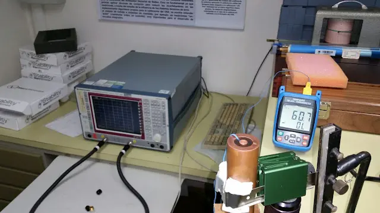

// FORMACIÓN Y DESARROLLO
Cargando 92,86%
Diez puntos para invertir y disponer del tiempo, osea del dinero.
9 de marzo de 2017 · 1 minuto de lectura
- Conocer bien los objetivos y la tolerancia al riesgo.
- Buscar consejos profesional para la toma de decisiones, pero recordar que la responsabilidad final es propia.
- Solo destinar el excedente.
- Invierta a largo plazo. Los mercados suben y bajan, pero a largo plazo suele haber más subidas que bajadas. Sepa mantener el rumbo y no se distraiga con las variaciones diarias.
- Diversificar, diversificar, diversificar.
- Mantener una mezcla de objetivos con distintos horizontes temporales para poder atender las necesidades a medida que se presentan.
- De todos los factores que afectan a la valoración, más importante es el factor tiempo.
- Evite las modas y los gurús de turno.Las rentabilidades históricas no son ninguna garantía de rentabilidad futura.
- En cuanto a la disciplina, se recomienda hacer aportaciones periódicas y regulares, aunque sean de pequeña cantidad, en vez de esperar lo que pueden parecer momentos oportunos para invertir cantidades más grandes.
- Nunca comprometerse sin entender la inversión y los riesgos que conlleva, y recuerde que no existe rentabilidad sin riesgo.
Estudios relacionados
Bola y viga | Lógica difusa
En este trabajo se desarrolla un control difuso basado en el sistema bola y viga, en reemplazo del muy utilizado control PID.
Agosto 2016
Permitividad dieléctrica | Argencon
cálculo de la permitividad dieléctrica compleja en líquidos por medio de parámetros S en una línea coaxial rígida.
Junio 2016DeadLine... -1,19%
Perder la motivación debe ser uno de los caminos más difíciles de transitar. Las cosas pasan y ya no hay motivos para festejar o enojarse.
Marzo 2016// EL SIGUIENTE PASO
TU PRODUCTO.
SU PRÓXIMA ETAPA.
Una primera conversación para entender el desafío y ver si puedo aportar valor.
↗ Hablemos de tu proyecto